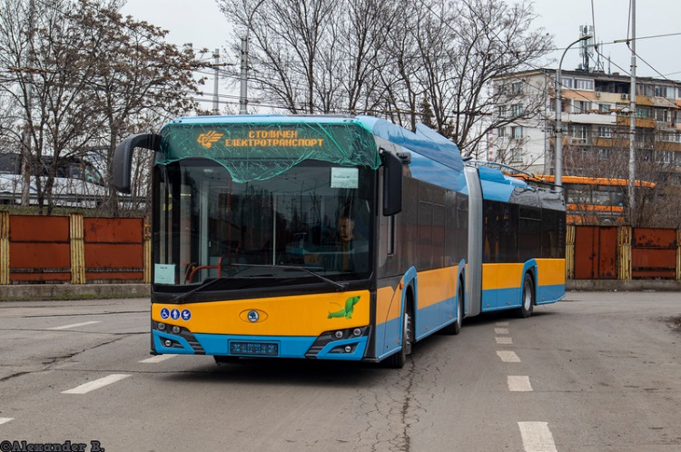
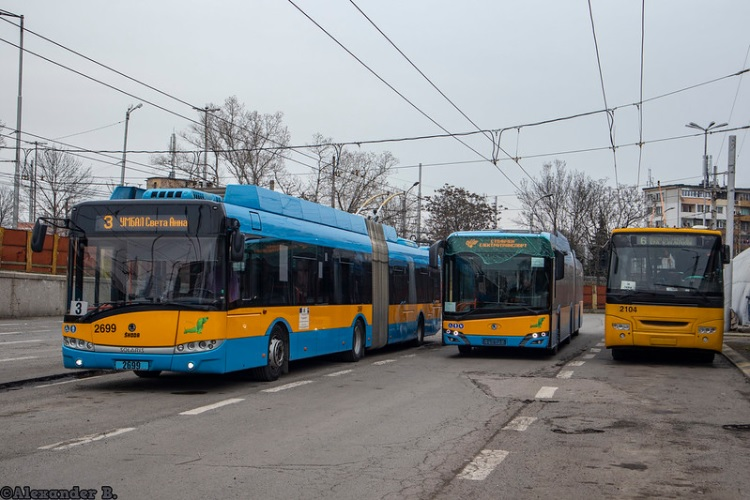
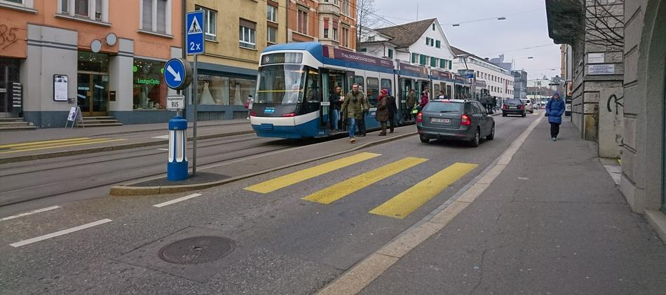

През последните 10 години е произведена повече пластмаса, отколкото през целия изминал век.
Производството на пластмаса от началото на масовото използване през 1950-те години е достигнало 8,3 млрд. метрични тона. Количеството пластмаса, което се произвежда годишно е приблизително с тежестта на цялото човечество.
За производството на пластмаса се използват около 8% от произвежданото количество петрол в световен мащаб.
През 1950 г. световното население е било 2,5 млрд. души, а производството на пластмаса е било 1,5 млн. тона. За сравнение, през 2016 г. световното население е било над 7 млрд. души, а производството на пластмаса е надхвърлило 320 млн. тона. Очаква се това количество пластмаса да бъде удвоено до 2034 г.
Европа е вторият по големина производител на пластмаса в света, произвеждайки средно 50 млн. тона годишно, от които около 40% се използват за пластмасови опаковки.
50% от пластмасата, която използваме, влиза в употреба само веднъж, след което я изхвърляме.По настоящем се възстановява само 5% от пластмасата, която се произвежда.
По настоящем се възстановява само 5% от пластмасата, която се произвежда.
Пластмасовият отпадък е около 10% от общия отпадък, който генерираме.
Годишно над 270 млрд. литра вода е необходима за изработката на пластмасови бутилки.
Всеки ден приблизително 8 милиона частици пластмаса попадат в океаните.
Годишно по света се използват приблизително 500 милиарда найлонови торбички. Всяка минута се употребяват над 1 милион торбички.
Времето, за което средно използваме една найлонова торбичка, е 15 минути.
В някои страни вече е забранена употребата на найлонови торбички. Например: Китай, Шри Ланка и Бангладеш.
Необходими са от 500 до 1000 години, за да може пластмасата да се разгради.
Пластмасовите отпадъци могат да бъдат открити на всеки един плаж на Земята, както на туристическите, така и на необитаемите.
Голямата тихоокеанска камара, представляваща огромна купчина боклук, се намира между Хавайските о-ви и бреговете на Калифорния. Тя е с територия 2 пъти по-голяма от тази на щата Тексас - вторият по големина щат в САЩ. Грамадата се състои от над 3,5 млн. тона отпадъци, 80% от които са пластмасови. Плаващият остров от боклук бил открит за пръв път през 50-те години, като оттогава всяко десетилетие площта му нараства 10 пъти.
Пластмасовите отпадъци причиняват смъртта на 1 милион морски птици и 100 000 морски бозайници всяка година.
На практика всяка частица пластмаса, която е била произведена, все още съществува под една или друга форма, с изключение на малко количество, което е било изпепелено.
Най-малко 8 млн. тона пластмаса попада в Световния океан всяка година.
Всеки ден само в Черно море, и то само от българските брегове е установено, че попадат 3 тона пластмасови отпадъци.
Замърсяване на въздуха
Замърсяването на въздуха убива 800 души на час или 13 всяка минута.
Годишно мръсният въздух отнема живота на три пъти повече хора, отколкото маларията, туберкулозата и СПИН, взети заедно.
Едни и същи замърсители допринасят както за климатичните промени, така и за локалното замърсяване на въздуха – саждите и метанът.
93 процента от децата по света живеят в райони, където замърсяването на въздуха надвишава насоките на СЗО. През 2016 г. инфекции на дихателните пътища са отнели живота на 600 000 деца под 15-годишна възраст.
Животът на 1 милион души може да бъде спасен всяка година, ако бъдат изпълнени целите за намаляване на замърсяването на въздуха до 2050 г., заложени в Парижкото споразумение за климата от 2015 г., които са:
- Ограничаване на глобалното затопляне до по-малко от 2 градуса по Целзий до 2050 г. в сравнение с периода преди индустриализацията. Целта е да се ограничи затоплянето до края на 21-ви век до само 1.5 ° C.
- Повишаване на способността за адаптиране към отрицателните последици от изменението на климата и насърчаване на устойчивостта на изменението на климата и намаляване на емисиите на парникови газове по начин, който няма да навреди на производството на храни.
- Насърчаване на потока от средства в областта на намаляването на емисиите на парникови газове и устойчивостта на изменението на климата.
Замърсяване на водите
Над 80 процента от отпадните води в света не се пречистват и замърсяват реките и езерата.
Средно страните с ниски доходи преработват около 8 процента от промишлените и домакинските отпадни води. Страните с високи доходи пречистват 70 процента.
Замърсяването с човешки и животински отпадъци засяга почти всяка трета река в Латинска Америка, Азия и Африка, излагайки милиони хора на риск.
През 2012 година смъртта на 842 000 души в страните с нисък и среден доход се свързва със заразена вода и недостатъчни санитарно-хигиенни условия.
В Африка южно от Сахара над 60 процента от градското население живее в гета.
Нигерийският град Лагос генерира 1,5 милиона кубични метра отпадна вода всеки ден, по-голяма част от която се изхвърля непречистена в лагуната на Лагос.
Изхвърлянето на непречистена вода в моретата дава до известна степен обяснява бързото разрастване на безкислородните мъртви зони. Засега е засегнат район, който е горе-долу с размерите на Великобритания, като това се отразява на препитанието, рибарството и хранителните вериги.
Най-малко 50 страни използват отпадни води за селскостопанско напояване, което засилва опасността болестотворни организми да заразят реколтата.
Две трети от световното население живее в райони, в които има недостиг на вода най-малко един месец в годината.
До 2030 година се очаква световното търсене на вода да нарасне с 50 процента.
Международната космическа станция използва една и съща вода 17 години.
В Израел пречистената вода е над 40 процента от водата, използвана за напояване.
Инфраструктурни факти
Първоначално в инфраструктурата на София са били предвидени "въздушни коридори", които да проветряват въздуха в града, тъй като това е нужно за градовете, разположени в котловини. Със започването на масовото застрояване на София в последните 20-30 години обаче тези коридори започват да се застрояват и в момента единствените останали са тези по реките в града.
Във връзка с проект „Изпълнение на дейности за подобряване качеството на атмосферния въздух в Столична община чрез закупуване и доставка на електрически превозни средства за шосеен транспорт – електрически автобуси и тролейбуси“ по Оперативна програма “Околна среда 2014 – 2020 г.” на 9-ти март (вторник) в тролейбусно депо "Надежда" бяха доставени 3 от общо 30 нови нископодови съчленени тролейбуса Skoda Solaris. Очаква се да бъдат пуснати в експлоатация до около 20.03 по линии 1, 6, 7 и 9.



Това е снимка на типична за Цюрих улица. В час пик, по лентата за автомобили преминават 400 коли, в които се движат 500 души. С трамвая за час се превозват примерно 3500 души. И така, нищо че на пръв поглед трамвайните линии изглеждат пусти и неефективни, с числата всичко е на обратно: трамваите вършат голяма работа като извозват 7 пъти повече хора, отколкото автомобилите и с лекота могат да извозят още толкова. А все още не сме разгледали екологичните и икономическите преимущества на обществения транспорт пред автомобилния.
Сега нека преминем към „традиционните“ транспортни инженери, чийто правила гласят, че трябва да се направи нещо за облекчаване на болката на хората в автомобилите. Какво може да се направи? Като начало да се отнеме предимството на трамвая на улицата и на кръстовищата. И да се добави по още една лента в двете страни. А освен това да се направи и лента за обръщане на кръстовищата, тогава ще има място за преминаването на около 700-800 автомобила в час. Може да напишете в отчета си: “Готово! Нивото на обслужване се повиши! Все още не е идеално, но е по-добро от преди!“Но така инженерите забравят за около 3500 души, които са в трамвая (и още хиляди пешеходци и велосипедисти). Колко от тях ще продължат да се придвижват с трамвая, който заради автомобилите ще се движи все по-бавно и все по-малко надеждно? Какво ще стане ако 1000 души от тях се качат на автомобилите или на Юбер, което още повече ще влоши положението на трамвая? Не забравяйте: това е богат град и хората имат избор. И така ще се върнем в началото. Какво ще правим по-нататък? Картината не е приятна: трамваят ще се нуждае от повече субсидии и ще предлага по-некачествената услуга, а ние няма да сме подобрили ситуацията за автомобилите, тъй като ще сме добавили стотици ежедневни пътувания по улиците. Разбира се, може да се премине и към по-радикални мерки, като премахване на сгради за разширяване на пътното платно. Това ще ни доведе до това, че с бързото ни придвижване до предградията ще подкопаем икономиката на града, тъй като няма да искаме да прекараме повече време в него. Със загубата на малките местни магазинчета, на жителите ще им се наложи да пътуват до някъде за продукти, което ще изкара още повече коли на улицата.